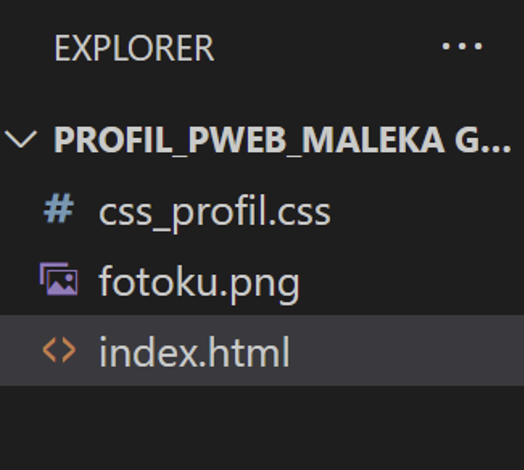
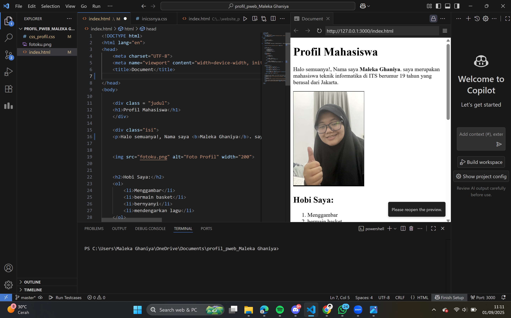
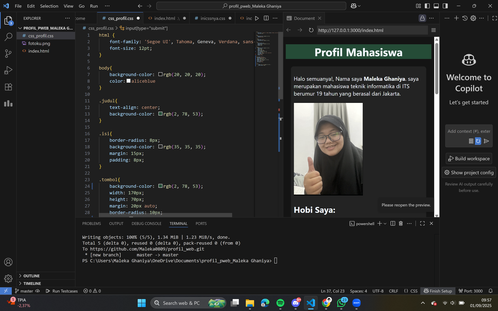

kali ini saya membuat CV menggunakan HTML. Hal pertama yang saya lakukan biasanya membuat folder dan file yang dibutuhkan dengan format .html dan .css. juga memasukkan unsur unsur yang dibutuhkan ke dalam folder seperti file gambar.
Hal selanjutnya yang saya lakukan koding di HTML terlebih dahulu dan sedikit membuat sketsa.
lalu saya membuat kode css untuk mempercantik tampilan.
